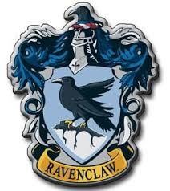

Ravenclaw values intelligence, creativity, learning, and wit.[HP5][HP7] The house mascot is an eagle and the house colours are blue and bronze (blue and grey in the films). During the books, the head of this house is the Charms teacher, Professor Filius Flitwick, and the house ghost is the Grey Lady. According to Rowling, Ravenclaw corresponds roughly to the element of air. The founder of this house is Rowena Ravenclaw. The dormitories are in Ravenclaw Tower, on the west side of Hogwarts. The common room is round and filled with blue hangings and armchairs, has a domed ceiling painted with stars and features a replica statue of Rowena wearing her diadem. Harry also notes that Ravenclaws "have a spectacular view of the surrounding mountains". A logical riddle must be solved to gain entry, whereas the Gryffindor and Slytherin common rooms only require a password (Hufflepuffs need to tap a barrel in the rhythm of "Helga Hufflepuff"), indicating that it may be easier for those students from other houses who possess a high degree of intelligence to enter this common room than others. Professor McGonagall, the head of the Gryffindor House, solves the riddle accurately.
